Pre-Thermal Print
Thermal printer initial tests, experimenting with the speed of the machine to get different shades of grey and contrasts.
⏝thermal printer


Heat-Gun Object
An alternative way to get a thermal reaction from the paper. Instead of using the thermal printer, applying heat with a heat-gun over the surface and placing objects underneath.
⏝heat gun


Heat-Gun Typography
To get a more defined shape, heat was applied to the thermal paper over an open box of lead type.
⏝heat gun

 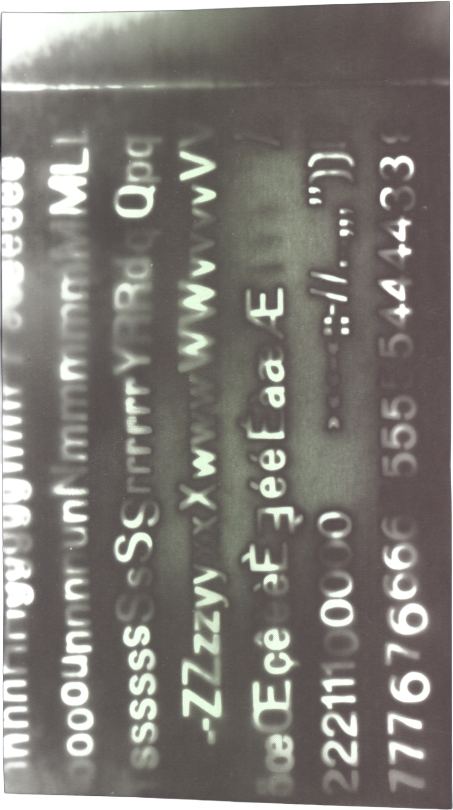
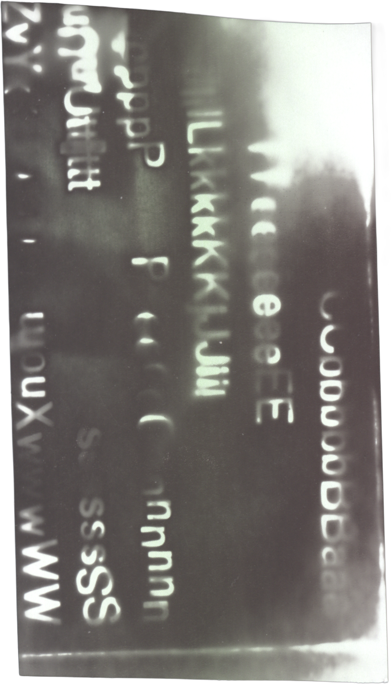
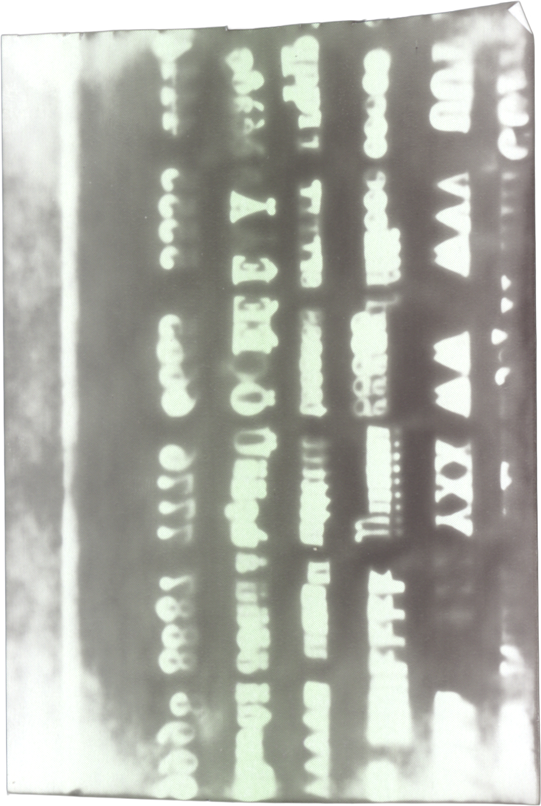
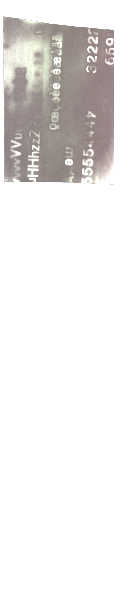
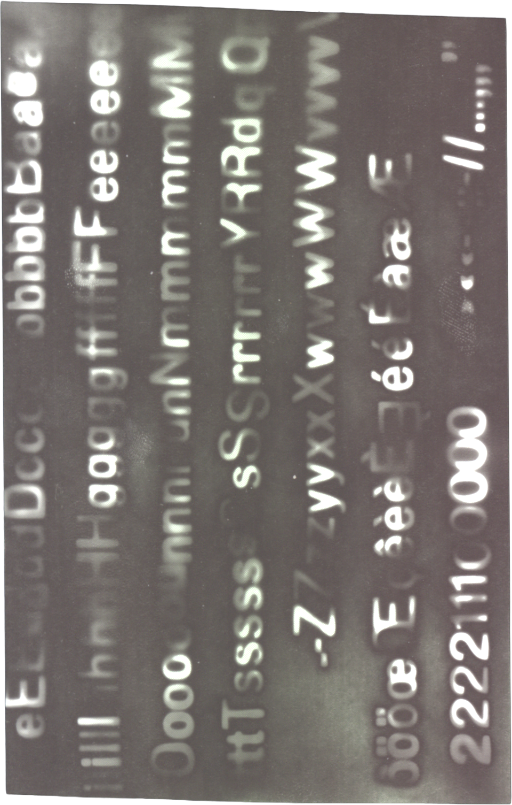
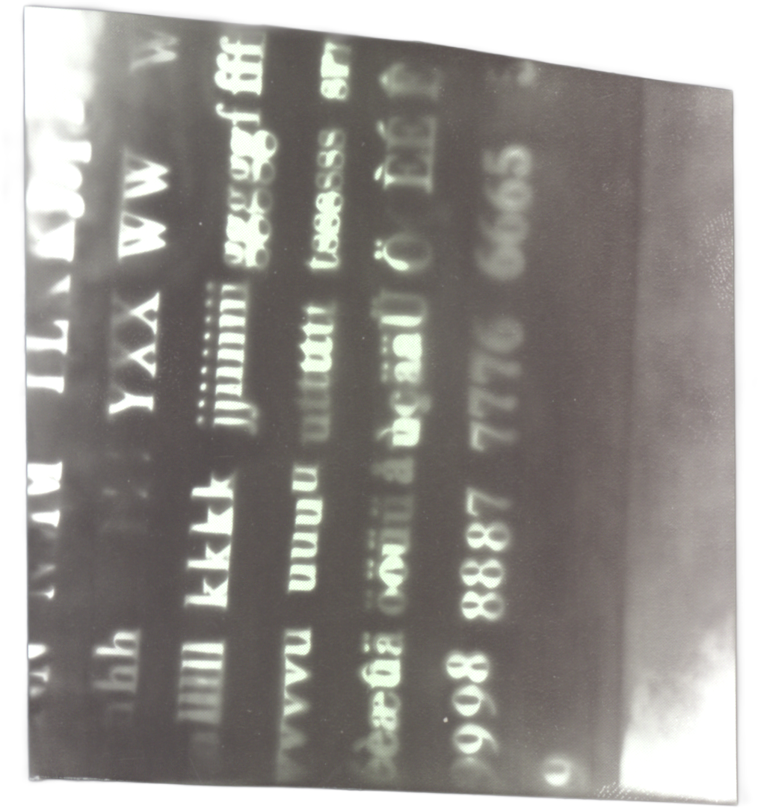
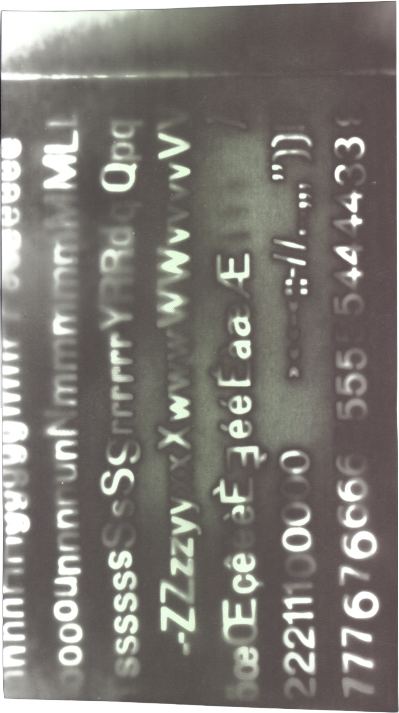
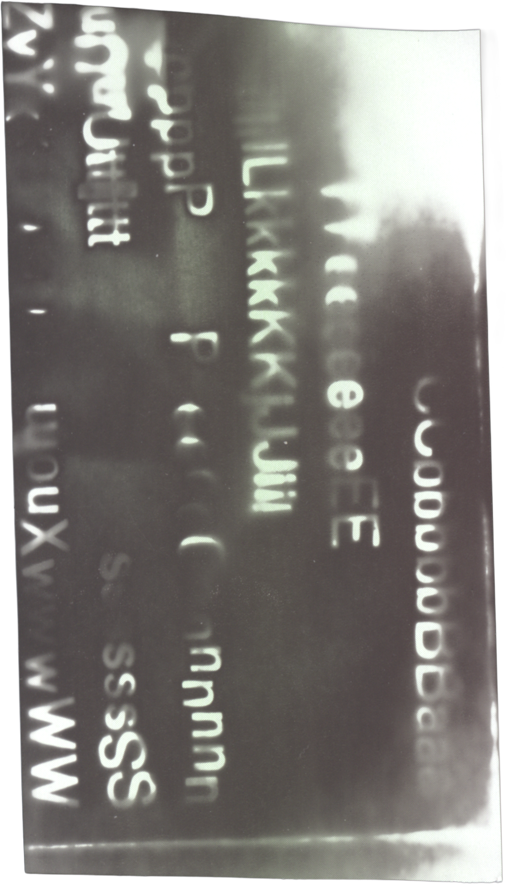
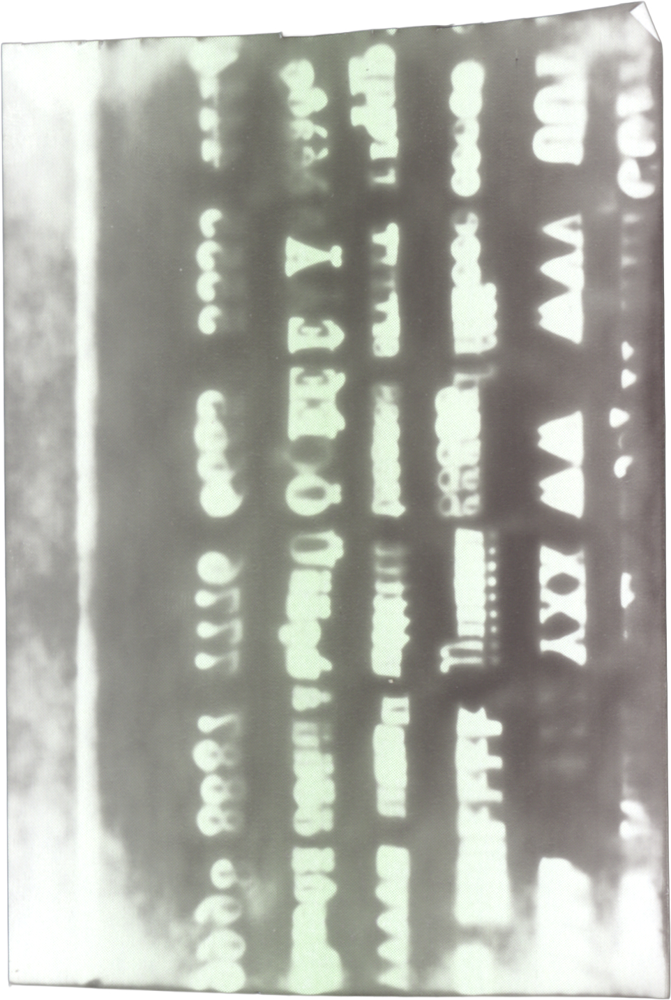
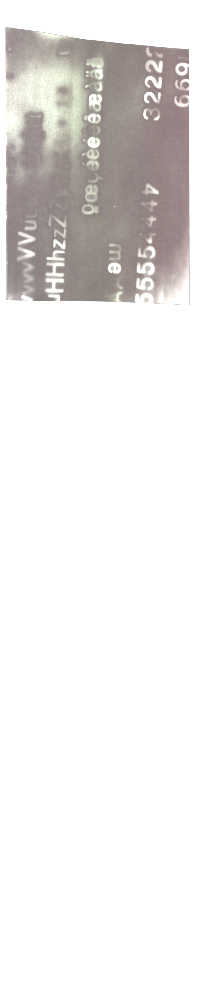
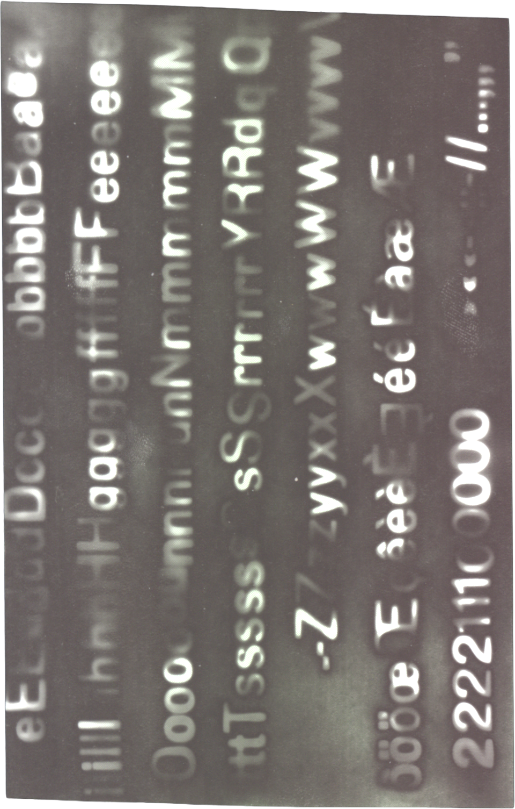
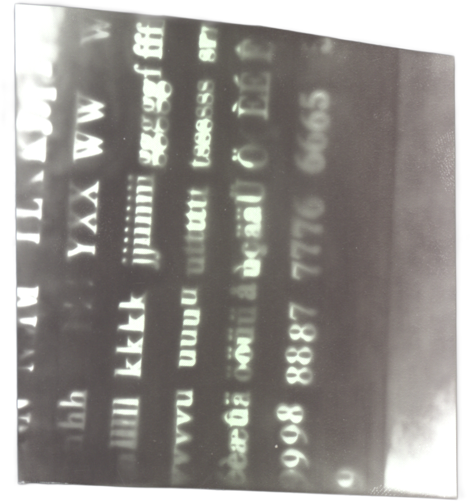
Heat-Gun Screenprint
Screen-printing with a tranparent base in different kinds of thermal paper and applying heat over the surface.
⏝screenprint
⏝heat-gun


Heatless Thermal Screenprint
On one of the types of paper, once the transparent base dries, a reaction is caused without using heat.
⏝screenprint


Heatless Vector Screenprint
To understand better the reaction in the paper, the printed design changed. Instead of using a raster image, a vectorial stroke pattern was applied to the different thermal surfaces without applying heat.
⏝screenprint


Heatless Color Screenprint
Applying color to the screen-print base, to see the reaction of the paper without applying heat.
⏝screenprint


Flat Surface Heat-Gun
Heat was applied over a table to the stroke designs once they were dry
⏝screenprint
⏝heat-gun


Holding Paper Heat-Gun
The heat was applied holding the paper up, avoiding having a surface that would distort the reaction.
⏝screenprint
⏝heat-gun


Invisible Layered Reaction
A transparent screen-printed paper is fed through the thermal printer. The ink blocks the thermal reaction from the machine.
⏝screenprint
⏝thermal printer


Color Layered Reaction
Feeding the thermal printer with color gauche screen-prints of the same designs.
⏝screenprint
⏝thermal printer


Transparent Layered Block
Testing different levels of gray over transparent screen-prints. Mantaining the speed of the machine in a slow setting.
⏝thermal printer
⏝screenprint
Folded Thermal Print
A bigger format of thermal paper was folded and fed through the machine.
⏝thermal printer
⏝fold

A4 to A2 Fold Riso Print
Feeding the Riso machine with folded paper, to achieve a larger print. In this case the A2 page was folded 4 times.

⏝riso
⏝fold
A3 to A2 Fold Riso Print
Folding the A2 twice to get an A3 printing surface, and playing with the layout.
⏝riso
⏝fold


A3 to A1 Fold Riso Print
In this case, and A1 sheet of paper was folded 4 times, to feed an A3 to the riso machine.
⏝riso
⏝fold

Paper Folding
Drawing numbers from the act of folding sheets of paper, indicating the number of folds created and using the folded edges as strokes.
⏝riso
⏝fold
Paper Grammature Riso Print
In order find the better paper weight for this method, 2 types of uncoated paper were tested (Superset & Prolight). Ranging from 40 g/m2 to 100g/m2.
⏝riso
⏝fold
Stencil Cut Riso Print
Exploring the idea of ghost images done by folds and wrinkles in the masters, a sheet of paper with holes was fed into the machine. With the goal of controlling the ghost images that the machine sometimes produces.
⏝riso
⏝fold
Next print
Designing two final posters based on the idea of layering the different ‘errors’ that we have discovered through the experimentation.
Trying a bigger format for the thermal paper (if possible)
Developing a documentation book to have also an analogue version of the website